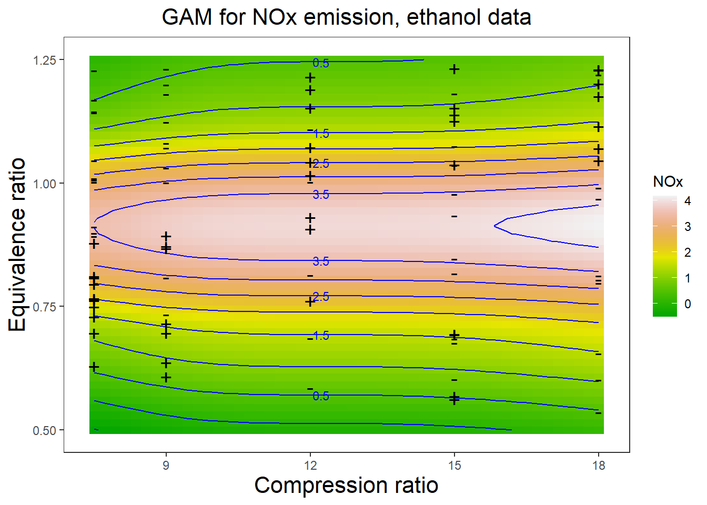
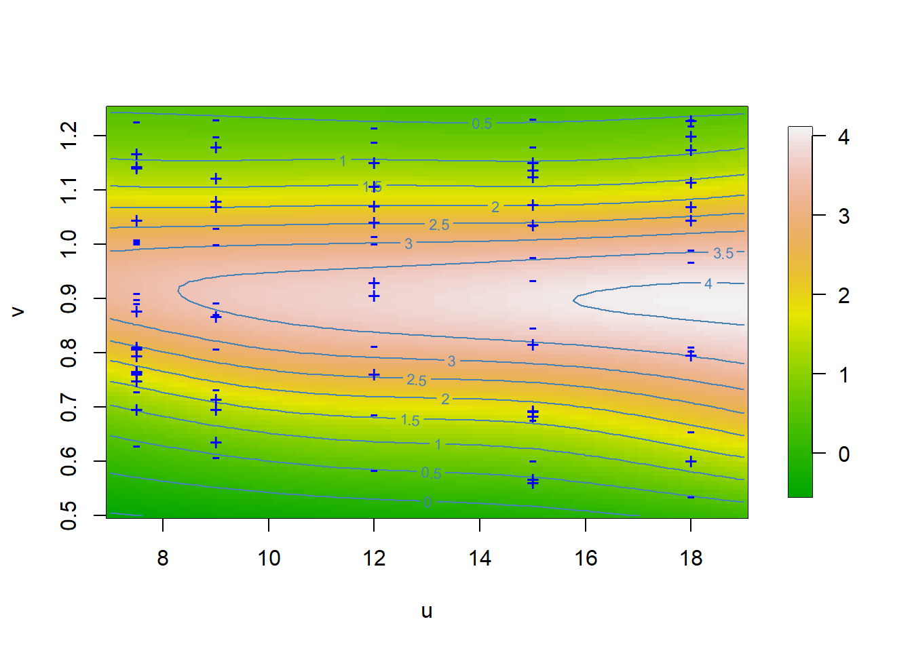
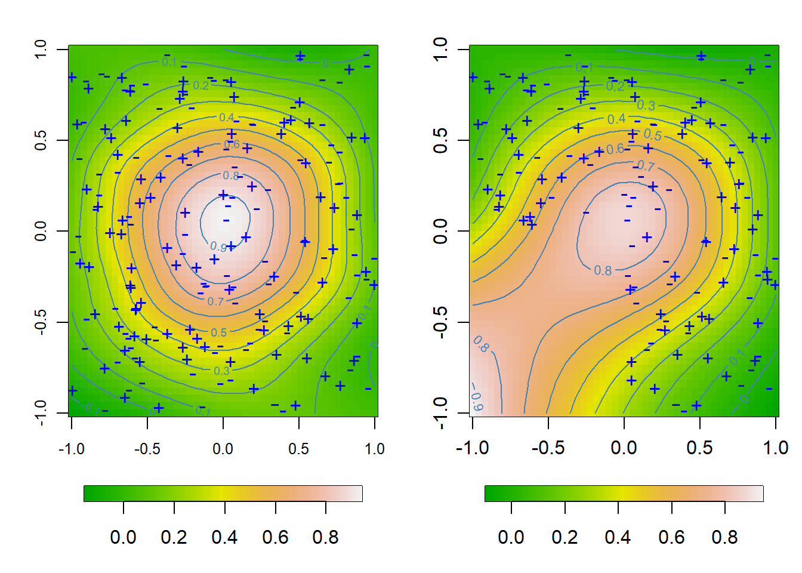

Chapter 4 Multidimensional Smoothing
该章节的理论有望应用于站点数据空间插值。
4.1 Figure 4.1
# GAM smoothing (Ethanol data)
# A graph in the book 'Practical Smoothing. The Joys of P-splines'
# Paul Eilers and Brian Marx, 2019
library(ggplot2)
library(SemiPar)
library(gridExtra)
library(JOPS)# Get the data
data(ethanol)
# Basis matrix for compression ratio (C)
clo = 7.5
chi = 18
ngrid = 50
B1 = bbase(ethanol$C, clo, chi)
# Basis matrix for equivalenc ratio (E)
elo = 0.5
ehi = 1.25
B2 = bbase(ethanol$E, elo, ehi)
# Penalty matrix
n = ncol(B1)
D = diff(diag(n), diff = 2)
r1 = 1:n
r2 = r1 + n
lambdas = c(1, 0.1)
P = kronecker(diag(lambdas), t(D) %*% D)
P = P + diag(2 * n) * 1e-06
# Fit the model
B = cbind(B1, B2)
y = ethanol$NOx
a = solve(t(B) %*% B + P, t(B) %*% y)
mu = B %*% a
cat('SD of residuals:', sd(y - mu), '\n')#> SD of residuals: 0.2242995# Add fitted components to data frame (for ggplot)
Fmod = ethanol
Fmod$f1 = B1 %*% a[r1]
Fmod$f2 = B2 %*% a[r2]
# Model fit on fine grid
cgrid = seq(clo, chi, length = ngrid)
Bg1 = bbase(cgrid, clo, chi)
egrid = seq(elo, ehi, length = ngrid)
Bg2 = bbase(egrid, elo, ehi)
zc = Bg1 %*% a[r1]
ze = Bg2 %*% a[r2]
# Fill data frames for ggplot
Fc = data.frame(cgrid, zc)
Fe = data.frame(egrid, ze)
# Create plots
plt1 = ggplot(aes(x = C, y = E), data = ethanol) +
geom_point(color = "darkgrey") +
xlab("Compression ratio (C)") +
ylab("Equivalence ratio (E)") +
ggtitle("Experiment design") +
JOPS_theme()
plt2 = ggplot(aes(x = E, y = NOx - f1), data = Fmod) +
geom_point(color = "darkgrey") +
geom_line(aes(x = egrid, y = ze), data = Fe, size = 1, color = "blue") +
xlab("Equivalence ratio") +
ylab("Partial residuals") +
ggtitle("Partial response") +
JOPS_theme()
plt3 = ggplot(aes(x = C, y = NOx - f2), data = Fmod) +
geom_point(color = "darkgrey") +
geom_line(aes(x = cgrid, y = zc), data = Fc, color = "blue", size = 1) +
xlab("Compression ratio (C)") +
ylab("Partial residuals") +
ggtitle("Partial response") +
JOPS_theme()
plt4 = ggplot(aes(x = f1 + f2, y = NOx), data = Fmod) +
geom_point(color = "darkgrey") +
geom_abline(slope = 1, intercept = 0, color = "blue", size = 1) +
xlab("Fitted NOx") +
ylab("Observed ") +
ggtitle("Compare fit to data") +
JOPS_theme()
# Make and save pdf
grid.arrange(plt1, plt2, plt3, plt4, ncol = 2, nrow = 2)4.2 Figure 4.2
#>
#> Attaching package: 'reshape2'#> The following objects are masked from 'package:data.table':
#>
#> dcast, melt#> Loading required package: metR# Image of GAM surface (Ethanol data)
# A graph in the book 'Practical Smoothing. The Joys of P-splines'
# Paul Eilers and Brian Marx, 2019
# Get the data
data(ethanol)
# Basis matrix for compression ratio (C)
clo = 7.5
chi = 18
ngrid = 50
B1 = bbase(ethanol$C, clo, chi)
# Basis matrix for equivalenc ratio (E)
elo = 0.5
ehi = 1.25
B2 = bbase(ethanol$E, elo, ehi)
# Penalty matrix
n = ncol(B1)
D = diff(diag(n), diff = 2)
r1 = 1:n
r2 = r1 + n
lambdas = c(1, 0.1)
P = kronecker(diag(lambdas), t(D) %*% D)
P = P + diag(2 * n) * 1e-06
# Fit the model
B = cbind(B1, B2)
y = ethanol$NOx
a = solve(t(B) %*% B + P, t(B) %*% y)
mu = B %*% a
cat('SD of residuals:', sd(y - mu), '\n')#> SD of residuals: 0.2242995# Add fitted components to data frame (for ggplot)
Fmod = ethanol
Fmod$f1 = B1 %*% a[r1]
Fmod$f2 = B2 %*% a[r2]
# Model fit on fine grid
cgrid = seq(clo, chi, length = ngrid)
Bg1 = bbase(cgrid, clo, chi)
egrid = seq(elo, ehi, length = ngrid)
Bg2 = bbase(egrid, elo, ehi)
zc = Bg1 %*% a[r1]
ze = Bg2 %*% a[r2]
Fit = outer(c(zc), c(ze), "+")
# Fill data frames for ggplot
Fc = data.frame(cgrid, zc)
Fe = data.frame(egrid, ze)
# Data frame for plotting data points with signs of residuals
x = ethanol$C
y = ethanol$E
z = ethanol$NOx
cols = c("blue", "yellow")[(z > mu) + 1]
pchs = c("+", "-")[(z > mu) + 1]
Data = data.frame(x = x, y = y, cols = cols, pchs = pchs, NOx = z)
# Turn matrix into a "long" data frame
Mu = Fit
rownames(Mu) = cgrid
colnames(Mu) = egrid
dens <- melt(Mu)
names(dens) = c('x', 'y', 'NOx')
# Plot fit with contours
sl = T
ccol = 'blue'
plt = ggplot(dens, aes(x, y, fill = NOx)) +
geom_raster(show.legend = sl) +
scale_fill_gradientn(colours = terrain.colors(100))+
geom_contour(data = dens, aes(z = NOx), color = ccol, show.legend = T) +
geom_text_contour(aes(z = NOx), color = ccol, size = 3) +
ylab('Equivalence ratio') + xlab('Compression ratio') +
ggtitle("GAM for NOx emission, ethanol data") +
geom_point(data = Data, aes(x =x, y = y), shape = pchs, size = 5) +
JOPS_theme() +
theme(panel.grid.major = element_blank(),
panel.grid.minor = element_blank(),
plot.title = element_text(size = 16),
axis.title.x = element_text(size = 16),
axis.title.y = element_text(size = 16))
print(plt)#> Warning: The following aesthetics were dropped during statistical transformation: fill
#> ℹ This can happen when ggplot fails to infer the correct grouping structure in
#> the data.
#> ℹ Did you forget to specify a `group` aesthetic or to convert a numerical
#> variable into a factor?
#> The following aesthetics were dropped during statistical transformation: fill
#> ℹ This can happen when ggplot fails to infer the correct grouping structure in
#> the data.
#> ℹ Did you forget to specify a `group` aesthetic or to convert a numerical
#> variable into a factor?
4.3 Figure 4.8
Tensor product P-spline fit (Ethanol data).
A graph in the book ’Practical Smoothing. The Joys of P-splines. Paul Eilers and Brian Marx, 2019
func <- function(x, y, range,
yseg = 10, xseg = 10, deg = 3,
u = NULL, v = NULL,
lambda = c(1, 0.1), plot = TRUE, ...) {
if (is.null(u)) u <- seq(range[1], range[2], length = length(x))
if (is.null(v)) v <- seq(range[3], range[4], length = length(y))
xpars <- c(range[1], range[2], xseg, deg)
ypars <- c(range[3], range[4], yseg, deg)
# Compute one-dimensional base
Bx <- bbase(x, xpars[1], xpars[2], xpars[3], xpars[4])
By <- bbase(y, ypars[1], ypars[2], ypars[3], ypars[4])
nx = ncol(Bx)
ny = ncol(By)
# Compute tensor products
B1 = kronecker(t(rep(1, ny)), Bx)
B2 = kronecker(By, t(rep(1, nx)))
B = B1 * B2
n = ncol(B)
# Compute penalty matrices
Dx = diff(diag(nx), diff = 2)
Dy = diff(diag(ny), diff = 2)
delta = 1e-10
Px = kronecker(diag(ny), t(Dx) %*% Dx + delta * diag(nx))
Py = kronecker(t(Dy) %*% Dy + delta * diag(ny), diag(nx))
E = diag(n)
# Fit the model
lambdax = 1
lambday = 0.1
a = solve(t(B) %*% B + lambdax * Px + lambday * Py, t(B) %*% z)
zhat = B %*% a
r = z - zhat
cat("SD of residuals:", sd(r), "\n")
# Compute grid for predicted surface
Bgx <- bbase(u, xpars[1], xpars[2], xpars[3], xpars[4])
Bgy <- bbase(v, ypars[1], ypars[2], ypars[3], ypars[4])
A <- matrix(a, nx, ny)
Fit <- Bgx %*% A %*% t(Bgy)
if (plot) {
# Plot result and data
cols <- c("blue", "red")[(z > zhat) + 1]
pchs <- c("+", "-")[(z > zhat) + 1]
image.plot(u, v, Fit,
col = terrain.colors(100)
# xlab = "Compression ratio",
# ylab = "Equivalence ratio"
)
contour(u, v, Fit, add = T, col = "steelblue", labcex = 0.7)
points(x, y, pch = pchs, col = "blue", cex = 1.1, )
# title("2D P-splines for NOx emission, ethanol data", cex.main = 1)
}
listk(u, v, Fit)
}#> 'data.frame': 88 obs. of 3 variables:
#> $ NOx: num 3.74 2.29 1.5 2.88 0.76 ...
#> $ C : num 12 12 12 12 12 9 9 9 12 12 ...
#> $ E : num 0.907 0.761 1.108 1.016 1.189 ...m <- nrow(ethanol)
x <- ethanol$C
y <- ethanol$E
z <- ethanol$NOx
range <- c(7, 19, 0.5, 1.25)
r <- func(x, y, range)#> SD of residuals: 0.1683194
4.4 Figure 4.9
# Tensor product P-spline fit and extrapolation (Ethanol data)
# A graph in the book 'Practical Smoothing. The Joys of P-splines'
# Paul Eilers and Brian Marx, 2019
library(SemiPar)
library(fields)
library(JOPS)# simulate data
m = 200
set.seed(2017)
x = 2 * (runif(m) - 0.5)
y = 2 * (runif(m) - 0.5)
z = exp(-x^2 - y^2)^2 + rnorm(m) * 0.1
sel = x > -0 | y > -0
m = length(x)
# Set parameters for domain
xlo <- -1
xhi <- 1
ylo <- -1
yhi <- 1
# Set P-spline parameters, fit and compute surface
xseg <- 10
xdeg <- 3
xpars <- c(xlo, xhi, xseg, xdeg)
yseg <- 20
ydeg <- 3
ypars <- c(ylo, yhi, yseg, ydeg)
# Compute basis
Bx = bbase(x, xpars[1], xpars[2], xpars[3], xpars[4])
By = bbase(y, ypars[1], ypars[2], ypars[3], ypars[4])
nx = ncol(Bx)
ny = ncol(By)
# Compute tensor products
B1 <- kronecker(t(rep(1, ny)), Bx)
B2 <- kronecker(By, t(rep(1, nx)))
B <- B1 * B2
# B = as.spam(B * (abs(B) > 1e-5))
n = ncol(B)
BtB = t(B) %*% B
Btz = t(B) %*% z
# Compute penalty matrices
Dx = diff(diag(nx), diff = 2)
Dy = diff(diag(ny), diff = 2)
delta = 1e-10
Px = kronecker(diag(ny), t(Dx) %*% Dx)
Py = kronecker(t(Dy) %*% Dy, diag(nx))
E = diag(n)
lambda1 = lambda2 = 1
a = solve(BtB + lambda1 * Px + lambda2 * Py, Btz)
zhat = B %*% a
# Compute grid for predicted surface
nu <- 50
nv <- 50
u <- seq(xlo, xhi, length = nu)
v <- seq(ylo, yhi, length = nv)
Bgx = bbase(u, xpars[1], xpars[2], xpars[3], xpars[4])
Bgy = bbase(v, ypars[1], ypars[2], ypars[3], ypars[4])
A = matrix(a, nx, ny)
Fit = Bgx %*% A %*% t(Bgy)
par(mfcol = c(1, 2), mar = c(3, 3, 2, 1), mgp = c(1.6, 0.8, 0))
# Plot result and data
cols = c("blue", "red")[(z > zhat) + 1]
pchs = c("+", "-")[(z > zhat) + 1]
image.plot(u, v, Fit, col = terrain.colors(100), xlab = "", ylab = "",
horizontal = T, legend.width = 0.7, cex = 0.8, legend.cex = 0.7,
cex.axis = 0.8)
contour(u, v, Fit, add = T, col = "steelblue")
points(x, y, pch = pchs, col = "blue", cex = 1.1)
x = x[sel]
y = y[sel]
z = z[sel]
m = length(x)
# Compute basis
Bx = bbase(x, xpars[1], xpars[2], xpars[3], xpars[4])
By = bbase(y, ypars[1], ypars[2], ypars[3], ypars[4])
nx = ncol(Bx)
ny = ncol(By)
# Compute tensor products
B1 <- kronecker(t(rep(1, ny)), Bx)
B2 <- kronecker(By, t(rep(1, nx)))
B <- B1 * B2
# B = as.spam(B * (abs(B) > 1e-5))
n = ncol(B)
BtB = t(B) %*% B
Btz = t(B) %*% z
lambda1 = lambda2 = 3
a = solve(BtB + lambda1 * Px + lambda2 * Py, Btz)
zhat = B %*% a
A = matrix(a, nx, ny)
Fit = Bgx %*% A %*% t(Bgy)
# Plot result and data
cols = c("blue", "red")[(z > zhat) + 1]
pchs = c("+", "-")[(z > zhat) + 1]
image.plot(u, v, Fit, col = terrain.colors(100), xlab = "", ylab = "",
horizontal = T, legend.width = 0.7)
contour(u, v, Fit, add = T, col = "steelblue", labcex = 0.7)
points(x, y, pch = pchs, col = "blue", cex = 1.1)
4.5 Figure 4.10
# Smoothing ring image with array regression (Simulated data)
# A graph in the book 'Practical Smoothing. The Joys of P-splines'
# Paul Eilers and Brian Marx, 2019
library(ggplot2)
library(JOPS)
library(fields)
# Simulate the rings
nx = 500
ny = 500
x = seq(-1, 1, length = nx)
y = seq(-1, 1, length = ny)
ex = rep(1, nx)
ey = rep(1, ny)
X = outer(x, ey)
Y = outer(ex, y)
R1 = sqrt((X - 0.3)^2 + (Y - 0.3)^2)
R2 = sqrt((X + 0.2)^2 + (Y + 0.2)^2)
R3 = sqrt((X - 0.7)^2 + (Y + 0.7)^2)
R4 = sqrt((X + 0.7)^2 + (Y - 0.7)^2)
Z1 = exp(-50 * (R1 - 0.4)^2)
Z2 = exp(-50 * (R2 - 0.6)^2)
Z3 = exp(-50 * (R3 - 0.2)^2)
Z4 = exp(-50 * (R4 - 0.2)^2)
Z = pmax(pmax(pmax(Z1, Z2), Z3), Z4)
# Add noise
set.seed(2019)
Z = Z + matrix(rnorm(nx * nx), nx, ny)
# Prepare bases
Bx = bbase(x, nseg = 20)
By = bbase(y, nseg = 20)
nbx = ncol(Bx)
nby = ncol(By)
# Prpare the penalty matrices
Dx = diff(diag(nbx), diff = 2)
Dy = diff(diag(nby), diff = 2)
lambdax = lambday = 1
Px = lambdax * t(Dx) %*% Dx
Py = lambday * t(Dy) %*% Dy
P = kronecker(Py, diag(nbx)) + kronecker(diag(nby), Px)
# Do the smoothing, using the array algorithm
W = 0 * Z + 1
Tx = rowtens(Bx)
Ty = rowtens(By)
Q = t(Tx) %*% W %*% Ty
dim(Q) = c(nbx, nbx, nby, nby)
Q = aperm(Q, c(1, 3, 2, 4))
dim(Q) = c(nbx * nby, nbx * nby)
r = t(Bx) %*% (Z * W) %*% By
dim(r) = c(nbx * nby, 1)
A = solve(Q + P, r)
dim(A) = c(nbx, nby)
Zhat = Bx %*% A %*% t(By)
# Prepare images/plots
cols = gray(seq(0, 1, by = 0.01))
par(mfrow = c(1, 2), mar = c(1, 1, 2, 1))
image(x, y, Z, col = cols, xlab = "", ylab = "", xaxt = "n", yaxt = "n")
title("Data", cex.main = 1.5)
image(x, y, Zhat, col = cols, xlab = "", ylab = "", xaxt = "n", yaxt = "n")
title("Smoothed", cex.main = 1.5)4.6 Figure 4.11
# Smoothing scattered data with 2D P-splines (Simulated data)
# A graph in the book 'Practical Smoothing. The Joys of P-splines'
# Paul Eilers and Brian Marx, 2019
library(ggplot2)
library(JOPS)
library(fields)# Simulate the rings
nx = 200
ny = 200
x = seq(-1, 1, length = nx)
y = seq(-1, 1, length = ny)
ex = rep(1, nx)
ey = rep(1, ny)
X = outer(x, ey)
Y = outer(ex, y)
R1 = sqrt((X - 0.3)^2 + (Y - 0.3)^2)
R2 = sqrt((X + 0.2)^2 + (Y + 0.2)^2)
R3 = sqrt((X - 0.7)^2 + (Y + 0.7)^2)
R4 = sqrt((X + 0.7)^2 + (Y - 0.7)^2)
Z1 = exp(-50 * (R1 - 0.4)^2)
Z2 = exp(-50 * (R2 - 0.6)^2)
Z3 = exp(-50 * (R3 - 0.2)^2)
Z4 = exp(-50 * (R4 - 0.2)^2)
Z = pmax(pmax(pmax(Z1, Z2), Z3), Z4) + 0.3
# Prepare bases
Bx = bbase(x, nseg = 20)
By = bbase(y, nseg = 20)
nbx = ncol(Bx)
nby = ncol(By)
# Prpare the penalty matrices
Dx = diff(diag(nbx), diff = 3)
Dy = diff(diag(nby), diff = 3)
lambdax = lambday = 0.1
Px = lambdax * t(Dx) %*% Dx
Py = lambday * t(Dy) %*% Dy
P = kronecker(Py, diag(nbx)) + kronecker(diag(nby), Px)
# Do the smoothing, using the array algorithm
W = matrix(runif(nx * ny) < 0.01, nx, ny)
Tx = rowtens(Bx)
Ty = rowtens(By)
Q = t(Tx) %*% W %*% Ty
dim(Q) = c(nbx, nbx, nby, nby)
Q = aperm(Q, c(1, 3, 2, 4))
dim(Q) = c(nbx * nby, nbx * nby)
r = t(Bx) %*% (Z * W) %*% By
dim(r) = c(nbx * nby, 1)
A = solve(Q + P, r)
dim(A) = c(nbx, nby)
Zhat = Bx %*% A %*% t(By)
# Make and save plots
cols = gray(seq(0, 1, by = 0.01))
par(mfrow = c(1, 2), mar = c(1, 1, 2, 1))
image(x, y, Z * W, col = cols, xlab = "", ylab = "", xaxt = "n", yaxt = "n")
title("Data", cex.main = 1.5)
image(x, y, Zhat, col = cols, xlab = "", ylab = "", xaxt = "n", yaxt = "n")
title("Smoothed", cex.main = 1.5)